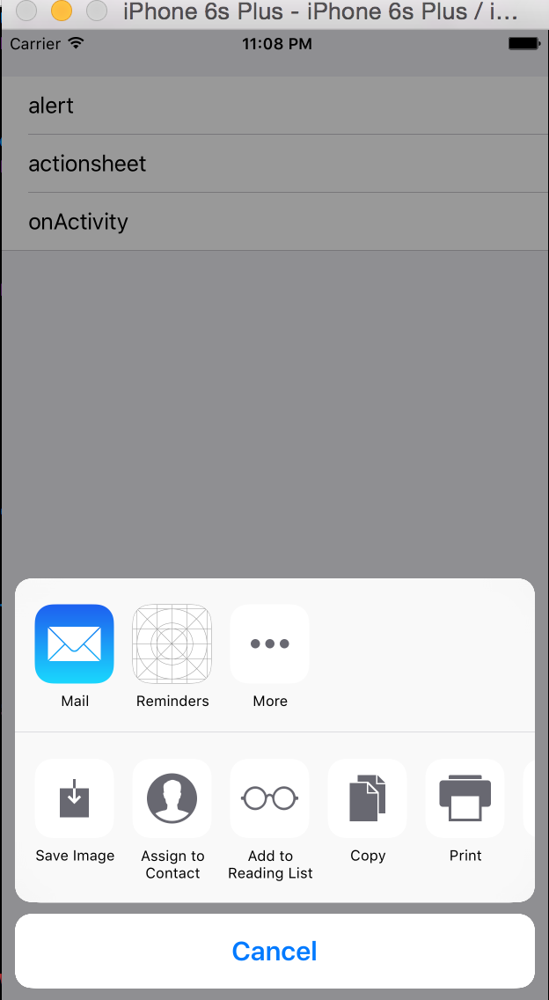

苹果官方的APNS，支持App不同状态下（前台、后台、未启动等）的消息推送。
另外个方案是，App和应用服务间维护一个长链接，应用服务通过心跳感知App状态。当App为在线状态时，应用服务可以通过该长链接推送消息。一般作为APNS的备用。
在Push消息中设置自定义参数，App在
- (void)application:(UIApplication *)application didReceiveRemoteNotification:(NSDictionary *)userInfo收到消息后解析参数并做相应逻辑（如跳转到相应页面等）
移动安全
相关博文
安全检查项
- 移动App上关键数据（密码、个人信息等）在存储、传输等各个阶段需要做一定的安全保护。下图罗列了常见的检查项。

传输安全
保密性，消息是加密的，内容没有泄露，可以用对称加密算法进行加解密，如AES256。
完整性，消息是完整的，内容没有被篡改，对消息做哈希得到摘要，作为消息的签名。哈希算法有SHA256等，MD5、SHA1已经不太安全，尽量用SHA256等相对安全的算法。
真实性，消息是可靠的，内容来自受信的来源，验证来源的数字证书是否可靠。
常见工具
class-dump-z
一个跨平台的 Objective-C 接口提取器,用于分析 iPhoneOS 可执行文件中私有的 API。需 通过 Cydia 安装。darwin cc tools (otools) 一个开源的苹果程序编译和连接器。需通过 Cydia 安装。
HTTP代理抓包工具(Fiddler)
Plist文件查看器(plistEditor)
iOS内存修改工具(iGameGuard)
内购破解工具(LocalIAPStore、iAPFree)
keychain-dumper
该工具可以读取已越狱 IOS 设备中的 keychain。需通过 Cydia 安装。Link Identity Editor (ldid)
该工具可以协助测试人员修改 Mach-O 二进制文件的签名信息。需通过 Cydia 安装。OpenSSH
OpenSSH 是 Linux 下常用的服务,装上后设备可充当 SSH 服务端。需通过 Cydia 安装。Snoop-it
IOS APP 安全评估工具。可对 APP 进行静态、动态分析。需通过 Cydia 安装。
移动三方应用分享
iOS原生分享控件

|
|
三方开放平台
- 新浪微博 http://open.weibo.com
- 腾讯微博 http://dev.t.qq.com
- QQ空间，朋友网 http://connect.qq.com/intro/login/
- QQ分享（QQ好友，QQ群等）http://mobile.qq.com/api/
- 豆瓣社区 http://developers.douban.com
- 人人网 http://dev.renren.com
- 微信好友 微信朋友圈 http://open.weixin.qq.com
- 友盟U-Share
- 用过友盟Share，但是遇到友盟ShareSDK中使用的微信SDK版本与官方不同步的问题，后来放弃了友盟ShareSDK，全部采用原生官方SDK，如微信（好友、朋友圈）、QQ、微博，在国内，这三个分享渠道已经能覆盖80%了。
URL Schemes
- iOS应用间可以通过
URL Schemes解决相互通信的问题。 - DemoA通过
openURL唤起DemoB，并带上参数。
|
|
- DemoB收到并解析参数并作逻辑处理，然后同样通过
openURL返回到DemoA，并带上参数。
|
|


三方分享或认证
- 三方应用分享或认证都会用到
URL Schemes流程，实际过程和参数会更复杂点，还需要考虑安全性。 - 如微信三方登录认证，除了三方应用通过URL Scheme跳转微信拿到code，再通过https请求微信后台拿到access_token，后续用https带上access_token可以请求各种资源。

- 三方分享则是通过
URL Schemes带上不同格式的数据（文本、图片、链接等）。
模式和架构
编程模式
- 函数式编程 vs 面向对象编程
- 响应式编程 vs 命令式编程
- promise
架构、框架、设计模式：
- 1、架构属于顶层的设计，划分软件或解决方案的整体结构，倾向于抽象，常见的有分层架构、事件驱动架构、微内核架构、微服务架构等。
- 2、框架类似于提供工具库或类库，倾向于实现。
- 3、设计模式应该是更细力度的代码层级的复用、可维护性、可扩展性的设计。
设计模式：
- 1、基于某种具体场景，代码组织结构或交互行为的设计方法，使得代码更易于复用、维护、扩展。
- 2、基本的6个原则：开闭原则、里氏替换原则、依赖倒置原则、接口隔离原则、单一职责原则、最少知识原则。
- 3、创建型模式：工厂方法、抽象工厂、原型、单例、builder
- 4、结构型:适配器、组合、桥接、decorator、facade、享元、proxy
- 5、行为型:解释器、模版方法、责任链、命令、迭代器、中介者、memento、观察者、状态、策略、访问者等。
相关文章
前篇
1、系统架构师-基础到企业应用架构系列之--开卷有益
2、系统架构师-基础到企业应用架构-系统建模[上篇]
3、系统架构师-基础到企业应用架构-系统建模[中篇](上)
4、系统架构师-基础到企业应用架构-系统建模[中篇](下)
5、系统架构师-基础到企业应用架构-系统建模[下篇]
6、系统架构师-基础到企业应用架构-系统设计规范与原则[上篇]
7、系统架构师-基础到企业应用架构-系统设计规范与原则[下篇]
8、系统架构师-基础到企业应用架构-设计模式[上篇]
9、系统架构师-基础到企业应用架构-设计模式[中篇]
10、系统架构师-基础到企业应用架构-设计模式[下篇]
中篇
11、系统架构师-基础到企业应用架构-企业应用架构
12、系统架构师-基础到企业应用架构-分层[上篇]
13、系统架构师-基础到企业应用架构-分层[中篇]
14、系统架构师-基础到企业应用架构-分层[下篇]
15、系统架构师-基础到企业应用架构-表现层
16、系统架构师-基础到企业应用架构-服务层
17、系统架构师-基础到企业应用架构-业务逻辑层
18、系统架构师-基础到企业应用架构-数据访问层
19、系统架构师-基础到企业应用架构-组件服务
20、系统架构师-基础到企业应用架构-安全机制
后篇
21、单机应用、客户端/服务器、多服务、企业数据总线全解析
22、系统架构师-基础到企业应用架构-单机应用(实例及demo)
23、系统架构师-基础到企业应用架构-客户端/服务器(实例及demo)
24、系统架构师-基础到企业应用架构-多服务(实例及demo)
25、系统架构师-基础到企业应用架构-企业数据总线(实例及demo)
26、系统架构师-基础到企业应用架构-性能优化(架构瓶颈)
27、系统架构师-基础到企业应用架构-完整的架构方案实例[上篇]
28、系统架构师-基础到企业应用架构-完整的架构方案实例[中篇]
29、系统架构师-基础到企业应用架构-完整的架构方案实例[下篇]
30、系统架构师-基础到企业应用架构-总结及后续
iOS原生Alert和ActionSheet

|
|

|
|
Nodejs学习
- Node.js是一个Javascript运行环境(runtime)。
- 基于V8引擎。
- 使用事件驱动、非阻塞IO模型，应用轻量、高效。
- Node.js 教程